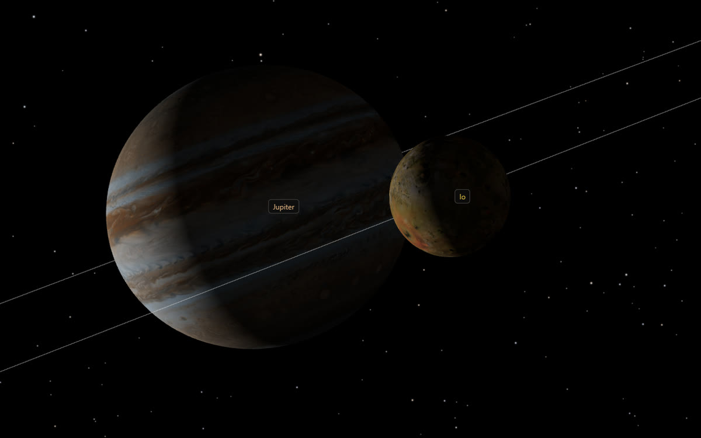

The solar system in a web page, placed from published data
Every scene on this page runs on Astraeus, a TypeScript library. Load one here, move through time, and open any body to see where its position comes from.

- 4cmIo's largest difference from JPL Horizons
- 1kmthe planets' largest difference from Horizons, 1972 to 2044
- 25,588Perseid orbits, each measured and drawn on its own
- 0.04°between the Perseid radiant those orbits imply and the IAU's
Three scenes, and what each one is made of
Each scene says which parts were measured and which were filled in. Developer mode in any of them shows the settings behind it.
-
 July 1969
July 1969Apollo 11
Eight days to the Moon and back, with seven story panels that open as the clock reaches each step.
- Measured
- NASA's published anchor points, 30 timed events
- Modelled
- the coasts between anchors, integrated with Earth, Moon and Sun gravity
-
 Perseids and Geminids
Perseids and GeminidsMeteor showers
Earth through the trail of comet Swift–Tuttle, and with one switch the trail of asteroid 3200 Phaethon.
- Measured
- the shape and tilt of 25,588 + 51,115 orbits (Global Meteor Network)
- Filled in
- where each meteoroid sits along its orbit, marked illustrative
-
November 2016
Jupiter and Io
Io in front of Jupiter with its volcanic surface mapped and named, and every known moon of Jupiter on its orbit.
- Measured
- positions from JPL Horizons, within 1 m for every moon
- Maps
- Io: USGS. Jupiter: Solar System Scope, CC BY 4.0
Apps built on Astraeus
Separate sites by the same author, each installing the published package from npm.
The asteroid belt
About 110,000 main-belt asteroids and the 16,475 known Jupiter Trojans, placed from NASA/JPL orbital elements.
Visit →Meteor showers
A standalone meteor-shower site, built on the published 0.2.0 package.
Visit →Earth's Closest Calls
The ten closest asteroid flybys of Earth since 2020, with the clearance of each.
Visit →
Why Io lands within 4 cm
Io's position is not looked up in a table. The engine keeps short polynomial fits to JPL Horizons and evaluates them at any moment, in 47 times less space than a table. Move the slider to compare the two.
Hour 0.0 · Io is 421,000 km from Jupiter's centre
For 2010 to 2030 the fits for Io take 1.1 MB; a 10-minute table would take 50.5 MB, 47× as much. Data: JPL Horizons, NASA/JPL-Caltech Solar System Dynamics.
Underneath
Astraeus is an MIT-licensed TypeScript library on npm, drawn with Three.js. The three scenes above run on the same engine, with no special cases for any of them.
- Time and frames.UTC, TT and TDB converted in one place; positions held in J2000 equatorial.
- Data sources.Horizons fits for planets and 458 moons, orbital elements for comets and meteoroids, sampled paths for spacecraft.
- Drawing at any scale.A floating origin keeps a comet 51 AU out steady to 0.002 px; 8,920 naked-eye stars from HYG.
- Story.Timelines, events, panels that open at their moment, and a card that labels each value observed, modelled or illustrative.
- Guide · API reference · Ready-made parts · Data and credits
import { Scene, jupiter, io, mount } from "astraeus"; import { dataSource } from "astraeus-data-jupiter"; const scene = new Scene() .addBody(jupiter) .addBody(io) .setTime("2016-11-04T00:00:00Z"); mount(document.getElementById("app"), scene, { data: [dataSource] });